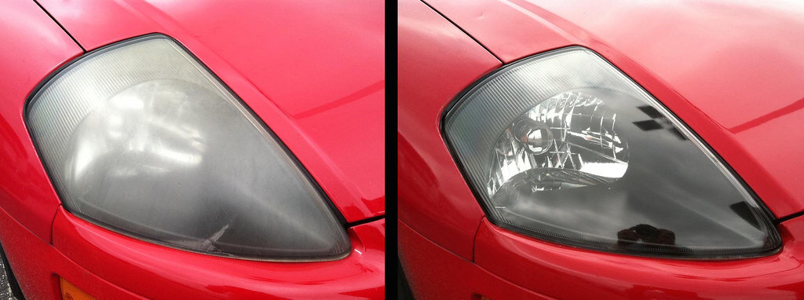

Your car won't
start. We will.
A fully-equipped mobile mechanic and headlight restoration crew that comes to your driveway, office lot, or the shoulder of I-10. No tow, no waiting room, no wasted afternoon.
Two specialties, one visit
Full mobile repair and Katy's go-to headlight restoration — both come to you.
Mobile Mechanic Services
Diagnostics, brakes, batteries, alternators, oil changes — done in your driveway. See the full list →
02Headlight Restoration
Cloudy, yellowed lenses buffed and sealed clear again. Our specialty — see the process & pricing →
03Get a Quote
Tell us what's going on and where you're parked. Most quotes back in minutes →

Before AfterExample photo: “headlight restoration” by Upstate Options Magazine, licensed CC BY 2.0 — shown to illustrate what the process achieves, not a ClearBeam job.

What Katy drivers say
Battery died in my Cinco Ranch driveway right before a work trip. Guy showed up in 40 minutes, tested it, swapped it, gone. Didn't have to reschedule a single meeting.
My headlights looked like they were coated in wax paper. Came back from lunch and they were glass-clear again. Should've done this two years ago.
Brakes were grinding on a Sunday and every shop was booked till Wednesday. They came out same day and quoted me before touching anything.